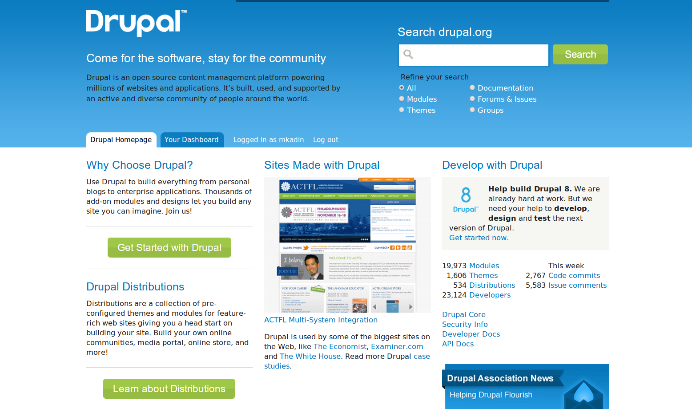

Dynamic Web Experiences
Using Drupal's AJAX API
==Mike Kadin==
Twitter - @mkadin
http://mikekadin.com
http://moduleoff.com
Agenda
What is AJAX?
How does Drupal's AJAX system work?
DEMO: AJAX-ified links
DEMO: AJAX-ified forms
What is AJAX?
(Asynchronous JavaScript and XML)
HTML, CSS, JS
=====>

XmlHttpRequest
<=====
Data
=====>
What Does it Take to Use AJAX?
Client-side JavaScript to make requests to the server
Server-side code to handle the requests and send back data
Client-side JavaScript to do something with the data that gets sent back
This is what makes AJAX Hard!
A lot of moving pieces.
Code on both the server- and client-side
Drupal's AJAX API
Takes the pain out of AJAX
You can work entirely within PHP
Extensible and generalizable
What Do I Need in Drupal to Use AJAX
Drupal's ajax.js has to be loaded on the page
Server-side PHP callback to handle AJAX requests
An AJAX-ified link or form element.
Real Example: Node Loading with Views
Here's What I've Done So Far
Created a bunch of fake article nodes
Created a view with article node titles as a block
Created a basic page with some simple HTML in it
<div id="ajax-content-wrapper"> <p>Click on a node title to load it!</p> </div>
Check It Out
Real Example: Form API AJAX
Here's What I've Done So Far
Created a very simple custom form at /example-form.
Check It Out